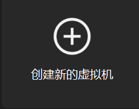
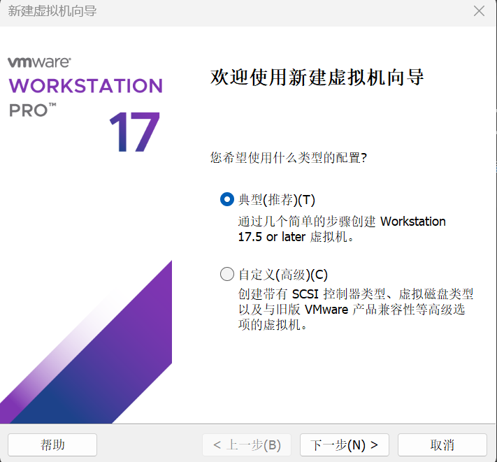

2025/4/10 作者:
什么是windows
windows95的更新内容
开始安装
windows是微软开发的一个图形化系统，现在的电脑大多数都是windows系统
windows95使用了比3.1美观的安装界面
安装时，windows95会以10秒钟1个的形式想你推送广告
windows95是微软开发的第一个需要密钥安装的系统
vmware下载链接:https://pan.xunlei.com/s/VO1bv8TipxaLzjfDrKCK1_JtA1?pwd=graj&path=/VMware17.5
windows下载连接:https://wwd.lanzoum.com/isXCN07br5ij 提取码:hd0o
视频链接:https://vdse.bdstatic.com//192d9a98d782d9c74c96f09db9378d93.mp4
打开vmware，选择创建新的虚拟机
选择典型（推荐）然后下一步
选择稍后安装操作系统，下一步，选择windows95，下一步，名称和位置自定，下一步，输入4，下一步，选择自定义硬件
先看内存，内存我们设置400MB，然后点击CD/DVD，选择使用光盘映像文件，点击浏览，选择我们下载的镜像
然后再看左边的菜单，我们再下面点击添加，选择软盘驱动器，选择确定，然后进入我们新添加的那一项
这里我们选择使用软盘映像文件，然后我们选择浏览旁边的添加，我们随便命名以下，然后再放到任意一个位置，选择保存，关闭
完成，开机，出现vmware开机LOGO的时候狂按F2，然后我们用左右键移动到boot，然后用上下键移动到CDROM，按+号变成第1个，按F10，回车
进入ms-dos，输入fdisk，回车3下，这里我们输入N，回车，然后我们删除这个2047，我们输入50%（也就是一半）
回车，按esc，回车，输入2，回车，确保这里的数字是2047，如果对了的话就按回车，不对的话就重新分区
按esc回去，回车，按esc，回车，选3，回车，按3下esc，然后他重启了，开机之后进入刚才的页面
输入format C: 回车，输入Y，这里等他到100%，出现这个V开头的提示直接按回车，然后输入format D:
输入Y，这里等他到100%，出现这个V开头的提示直接回车，然后输入copy *.* C: 回车，输入e:
回车，输入setup，这里我们等他出现全字幕没有进度条的地方，我们按X进入安装程序
这里他就进入图形化了，选择继续，等他加载，选择是，一直下一步直到真品认证这里
这里密钥是00100-OEM-0123456-00100，下一步，输入你的名字（注：这里要记住你写的名字）下一步，下一步，等他加载
加载完成，下一步，选择不需要启动盘，下一步，下一步，等他安装，点击完成，点击确定，在黑屏的时候直接关机
选择编辑虚拟机设置，选择软盘，取消勾选启动时链接，选择确定，开机，狂按F2
移动到boot，然后移动到harddrive，然后按+号变成第1个，按F10，回车
这里进入windows95了，等他加载，选择确定，这里我们自己输入你的名字，选择完成，等他加载
这里他让调时区，点击确定，继续等他加载，打印机这里选择取消，选择确定，这里他就会重启
然后我们开机，选择确定，然后再第一个输入框内输入名字，口令随便填，选择确定，再输入口令，选择确定
这样就安装成功了
zhuzistudio version3.0
copylight © zhuzistudio